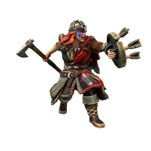

Veida Vikinginn

Pronouns she/her
Species Human (Uthgardt)
Age 28
Family Ormunda Drekisdottr (Sister)
Affiliations Uthgar, Red Tiger Tribe, Great Worm Tribe
Ideals
Veida sympethises with the cause of the Uthgardt Rebellion, but chooses to stay out of it. She recognises the greater threat posed by Wilhelm van Noord, so channels her tribe's resources into weakening the DIR rather than supporting either side of the civil war.
Bonds
Frosty relationship with her sister, Ormunda Drekisdottr.
Flaws
Veida is brash, rude and overly hostile to people she sees as pompous.
When tucking their children into beds at night, parents along the Sword Coast tell their children stories of the fearsom Viking queen. Her red hair like fire, the scar running down the length of her face, her utter ruthlessness and lack of a moral compass. In truth, Veida is a fairly personable and honourable sort, who sees raiding as a sacred tradition of her people. By birth, she was heir to the Great Worm tribe, but when she felt the call of the sea she left for the Red Tigers and quickly rose to become Jarl of this more worldly and meritocratic tribe. Now her sister, Ormunda Drekisdottr, rules in her place. The two have an icy and hostile relationship, but family is family.